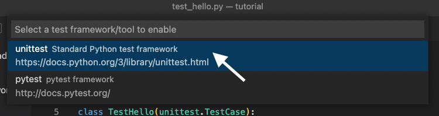
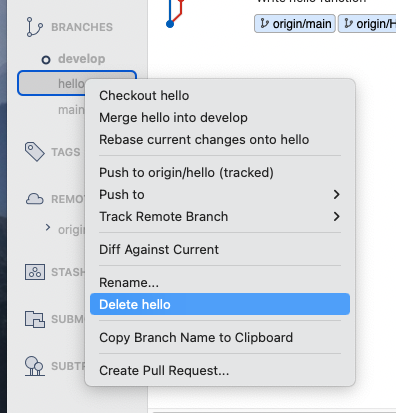
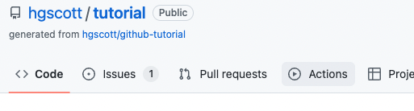

GitHub Tutorial: Agile & Continuous Testing
Contents
GitHub Tutorial: Agile & Continuous Testing#
Who is this for: Anyone interested in starting using GitHub for Continuous testing/integration.
What you’ll learn: We’ll introduce repositories, issues, kanban boards, branches, commits, pull requests, tests, and workflows.
What you’ll build: We’ll write some short code (a Hello World function) and a automated test for it.
Prerequisites: None. This course is a great introduction for your first day on GitHub.
How long: This course is four steps long and takes less than one hour to complete.
Welcome to “Introduction to GitHub”! :wave:
What is GitHub?: GitHub is a collaboration platform that uses Git for versioning. GitHub is a popular place to share and contribute to open-source software.
üì∫Video: What is GitHub?
What is Sourcetree: Sourcetree is a free Git client for Windows and Mac. It is useful both for beginers or people with little command line experience, AND for experts who want to do more advanced work like reviewing changesets, stashing, cherry-pick ingbetween branches and more.
How to use this tutorial#
Above these instructions, right-click Use this template and open the link in a new tab.
In the new tab, follow the prompts to create a new repository.
For owner, choose your personal account or an organization to host the repository.
We recommend creating a public repository—private repositories will use Actions minutes.
After your new repository is created, wait about 20 seconds, then refresh the page. Follow the step-by-step instructions in the new repository’s README.
Step 1: Open an Issue and Track on a Kanban board
Issues let you track your work on GitHub, and are useful for discussing specific details of a project such as bug reports, planned improvements and feedback.
Let’s open some issues about the work we are going to do today.
On GitHub.com, navigate to the main page of the repository.
Under your repository name, click Issues.
Click New issue.
Type a title and description for your issue. We will title our first issue “Write function that says hello to a given name”.

When you’re finished, click Submit new issue.
Repeat that process to create the following issues:
Test the hello function
Automatically build and test code
After that you will see all of your issues listed on the issue page.
Another way to track your issues is by using Projects. A project is an adaptable spreadsheet that integrates with your issues and pull requests on GitHub to help you plan and track your work effectively.
We’ll make a project for our work:
In the top right corner of GitHub.com, click your profile photo, then click Your project.
Click New project.
When prompted to select a template, click Board, under Start from Scratch. Then, click Create.
The board view of the project is essentially a Kanban board.
A kanban board is an agile project management tool designed to help visualize work, limit work-in-progress, and maximize efficiency (or flow). It typically has the columns “To Do”, “In Progress”, and “Done”, but you can have any columns that fit your workflow.
We can add the issues we have already created to the board by:
Clicking the “Add Item” button at the bottom of the Todo column
Searching for your repository using the
#key.Click on the individual issues you have made in the repository to add them to the board.
We can see that all of our issues remain to be done, by looking at the board.
Step 2: Clone your Repository Using SourceTree
**What is a repository?**: A [repository](https://docs.github.com/get-started/quickstart/github-glossary#repository) is a project containing files and folders. A repository tracks versions of files and folders.
:tv: [Video: Exploring a repository](https://www.youtube.com/watch?v=R8OAwrcMlRw)
From SourceTree, click Remote. All of your remote projects display.
Click Clone next to the repository you wish to clone locally.
From the Clone a repository window, click Clone. Click Local to see a list of your cloned repositories.
Step 3: Create branches for Trunk Based Development
⌨️ Activity: Your first branch with Sourcetree#
What is a branch?: A branch is a parallel version of your repository. By default, your repository has one branch named main and it is considered to be the definitive branch. You can create additional branches off of main in your repository. You can use branches to have different versions of a project at one time.
On additional branches, you can make edits without impacting the main version. Branches allow you to separate your work from the main branch. In other words, everyone’s work is safe while you contribute.
:tv: Video: Branches
What is Trunk-Based Development? Trunk Based Development is a branching model, where developers collaborate on code in a single branch called ‘trunk’ (or on their short lived feature branches). You should resist any pressure to create other long-lived development branches by employing documented techniques. You avoid merge hell, do not break the build, and live happily ever after. 
Instead of a single main branch, we will use two branches to record the history of the project. The main branch stores the official release history, and the develop branch serves as an integration branch for features. It’s also convenient to tag all commits in the main branch with a version number.
The first step is to complement the default main with a develop branch. A simple way to do this to create empty develop branch locally and push it to the server.
From Sourcetree, click the Branch button.
From the New Branch field, enter a name for your branch- we’ll call this one “develop”.
Click Create Branch.
_You created a branch! üéâ
Now, do the same for a feature branch, we’ll call “hello”.
Now you are all set to start developing!
Step 4: Commit a file
Now that you are on your feature branch, you can edit your project without changing the main branch. It’s time to create a file and make your first commit!
First, we will claim a task on the Kanban board, by moving a task from the Todo column to the In Progress column.
What is a commit?: A commit is a set of changes to the files and folders in your project. A commit exists in a branch.
⌨️ Activity: Your first commit#
The following steps will guide you through the process of committing a change on GitHub using Sourcetree. Committing a change requires first adding a new file to your new branch.
In your favorite IDE, make sure you’re on your new branch
hello.Open the file called
hello.pyin the directoryhello.In your IDE, copy the following content to your file:
def hello(name: str): return 'Hello, ' + name + '!'
Open the History view in SourceTree and notice that your repository now has uncommitted changes.
Open the File Status view, and click the check mark next to
Unstaged Filesto stage all of your changes.In the message box, enter a commit message.
Click the Commit button under the box. From Sourcetree’s History, you’ll see that the file has been updated on your new branch.
Click the Push button to push your new branch to the repository.
Under the Push? column from the dialog box that appears, select your new branches to indicate that you are pushing that branch to origin and click OK.
Now that we are doen with that task, we will move the task from In Progress to Done and close the issue.
Step 5: Create a test
The next task we will tackle is the task for testing our function, so we will move that task from Todo to In Progress.
What is unittest?: The unittest module provides a rich set of tools for constructing and running tests. It supports test automation, sharing of setup and shutdown code for tests, aggregation of tests into collections, and independence of the tests from the reporting framework.
In the test directory, there is a file called test_hello.py we will add 2 tests to the TestHello class.
The first test passes a name to the function and checks that the output is as expected.
We’ll call this function ‘test_hello_name` by typing:
def test_hello_name(self):
Inside that test function, call our
hellofunction with a name and check that the output is as excped withassertEqual. For example, to test teh name “John” we would write:
self.assertEqual(hello.hello('John'), 'Hello, John!')
We can run the tests directly in our IDE to check that our tests are passing.
To set up tests in VSCode:
Click the beaker in the left side bar.
Then click “Configure Python Tests”
We’ll select
unittestas the testing framework Select
testas the durectory containing the testsAnd select
test_*.pyas the pattern
We should now see the name of our test nested under the class, file, and directory

We can run our one specific test by clicking on the “play” button next to its name
Or we can run all of our tests (in this case that is the same thing),, by clicking on the “play” button at the top of the menu (on the test directory)
We can also test that the function fails when we want it to. Now, we will create a test that passes an integer instead of a string as the name, so we would expect the fucntion to raise a TypeError.
We’ll call this function
test_integer:
def test_integer(self):
We will tell the test to expect a Type error with the line
with self.assertRaises(TypeError):
Then inside of that
withstatement, run the function with an integer:
hello.hello(123)
We can now rerun all of the tests in the
testdurectory and check that our newtest_integertest passing:Click on the play button by
testThe green checkmarks next to all the test names means that everything is passing
Now commit and push these changes to the repositry using SourceTree.
Now that we have finished this task, we will make the task on the kanban board from In Progress to Done.
Step 6: Open a pull request
_Nice work making those commits ✨
Now that you’ve created a commit, it’s time to share your proposed change through a pull request!
What is a pull request?: Collaboration happens on a pull request. The pull request shows the changes in your branch to other people. This pull request is going to keep the changes you just made on your branch and propose applying them to the develop branch.
üì∫ Video: Introduction to pull requests
⌨️ Activity: Create a pull request#
You may have noticed after your commit that a message displayed indicating your recent push to your branch and providing a button that says Compare & pull request.
Click Compare & pull request.
In the base: dropdown, make sure develop is selected.
Select the compare: dropdown, and click
hello.Title the pull request to something meaningful, such as “Write and test Hello function”

The next field helps you provide a description of the changes you made. Feel free to add a description of what you’ve accomplished so far. As a reminder, you have: created two brances, added a function to the
hellomodule, and tested that function!Click Create pull request.
On the new pull request page you will see the information you just provided along with the commits you made and a diff of the files you edited.
Step 7: Merge your pull request
Nicely done friend! üòé
You successfully created a pull request. You can now merge your pull request.
What is a merge: A merge adds the changes in your pull request and branch into the main branch.
:tv: Video: Understanding the GitHub flow
⌨️ Activity: Merge the pull request#
Click Merge pull request.
Click Confirm merge.
Once your branch has been merged, you don’t need it anymore. To delete this branch, click Delete branch.
Back in Sourcetree check out the
developbranch by right-clicking on it and selecting “Checkout develop”You can pull the merged changes by clicking pull, and when prompted, confirm.
You can now see on the diagram that the hello branch came off of the develop branch and went back into it.
Since it is fully merged, it is safe to delete the
hellobranch. To do this, right click onhellounderBranchesand selectDelete hello. when prompted, say OK.
Step 8: Set up an automated workflow
GitHub Actions is a continuous integration and continuous delivery (CI/CD) platform that allows you to automate your build, test, and deployment pipeline. You can create workflows that build and test every pull request to your repository, or deploy merged pull requests to production.
You can configure a GitHub Actions workflow to be triggered when an event occurs in your repository, such as a pull request being opened or an issue being created. Your workflow contains one or more jobs which can run in sequential order or in parallel. Each job will run inside its own virtual machine runner, or inside a container, and has one or more steps that either run a script that you define or run an action, which is a reusable extension that can simplify your workflow.
We will create a workflow to run our tests every time you push to a branch, and every time you open a pull request. This will let you know if any changes have broken your code unexpectedly, and if your code is safe to merge into the development branch.
To claim this task, move the final issue on the kanban chart from Todo to In Progress.

In Sourcetree, make a new feature branch for setting up the action, called
action.In your IDE, open the file
.github/workflows/python-package.yml.Replace the TODO with the following lines:
name: Python package
on:
push:
pull_request:
jobs:
build:
runs-on: ubuntu-latest
strategy:
fail-fast: false
matrix:
python-version: ["3.8", "3.9", "3.10"]
steps:
- uses: actions/checkout@v2
- name: Set up Python ${{ matrix.python-version }}
uses: actions/setup-python@v2
with:
python-version: ${{ matrix.python-version }}
- name: Install dependencies
run: |
python -m pip install --upgrade pip
python -m pip install flake8 pytest
if [ -f requirements.txt ]; then pip install -r requirements.txt; fi
- name: Lint with flake8
run: |
# stop the build if there are Python syntax errors or undefined names
flake8 . --count --select=E9,F63,F7,F82 --show-source --statistics
# exit-zero treats all errors as warnings. The GitHub editor is 127 chars wide
flake8 . --count --exit-zero --max-complexity=10 --max-line-length=127 --statistics
- name: Test with pytest
run: |
pip install .
pytest
We’ll now go through what each oth these lines do.
Define the name of the workflow as it will appear in the “Actions” tab of the GitHub repository.
name: Python package
Specify the trigger(s) for the action. This example used the
pushandpull_requestevent, so a workflow run is triggered every time someone pushes a change to the repository (on any branch) or opens a pull a request.
on:
push:
pull_request:
Group together all the jobs that run in the workflow.
jobs:
Define a job named
build.
build:
Define the type of machine to run the job on. Here we will use a GitHub-hosted runner, specifically a virtual machine of the latest version of Ubuntu Linux.
runs-on: ubuntu-latest
strategy:
You can control how job failures are handled with jobs. If
fail-fastis set totrue, GitHub will cancel all in-progress and queued jobs in the matrix if any job in the matrix fails, which is the default. Here we will set it to false so that all jobs run regardless if one fails.
fail-fast: false
We will test our code on multiple python versions, listed here.
matrix:
python-version: ["3.8", "3.9", "3.10"]
Group together all the steps that run in the
buildjob. Each item nested under this section is a separate action or shell script.
steps:
The
useskeyword specifies that this step will runv3of theactions/checkoutaction. This is an action that checks out your repository onto the runner, allowing you to run scripts or other actions against your code (such as build and test tools). You should use the checkout action any time your workflow will run against the repository’s code.
- uses: actions/checkout@v2
This step uses the
actions/setup-python@v2action to install the specified version of python.
- name: Set up Python ${{ matrix.python-version }}
uses: actions/setup-python@v2
with:
python-version: ${{ matrix.python-version }}
The
runkeywork tells the job to execute a command on the runner. In this case you are using python to pip install the tools you need to run the workflow.
- name: Install dependencies
run: |
python -m pip install --upgrade pip
python -m pip install flake8 pytest
if [ -f requirements.txt ]; then pip install -r requirements.txt; fi
Here, the
runkeyword is using flake8 to lint the code.
- name: Lint with flake8
run: |
# stop the build if there are Python syntax errors or undefined names
flake8 . --count --select=E9,F63,F7,F82 --show-source --statistics
# exit-zero treats all errors as warnings. The GitHub editor is 127 chars wide
flake8 . --count --exit-zero --max-complexity=10 --max-line-length=127 --statistics
Here the
runkeyword installs the code we wrote (in the hellofolder) and uses pytest to run the tests in our test folder.
- name: Test with pytest
run: |
pip install .
pytest
Commit these changes and push them to your GitHub repository.
We can view the activity for a workflow run on the GitHub website.
Under the repository name, click Actions. 
Here we have only a single workflow, but if you had multiple, you could click on the name of the workflow you are interested in in the left sidebar to see only those results.
To get more details on a single workflow run, click on the name of the event that triggered the workflow.
From there, you can look at individual jobs, and their console output.
Finally, when we open a pull request to merge this code we can check that all tests are passing before merging.